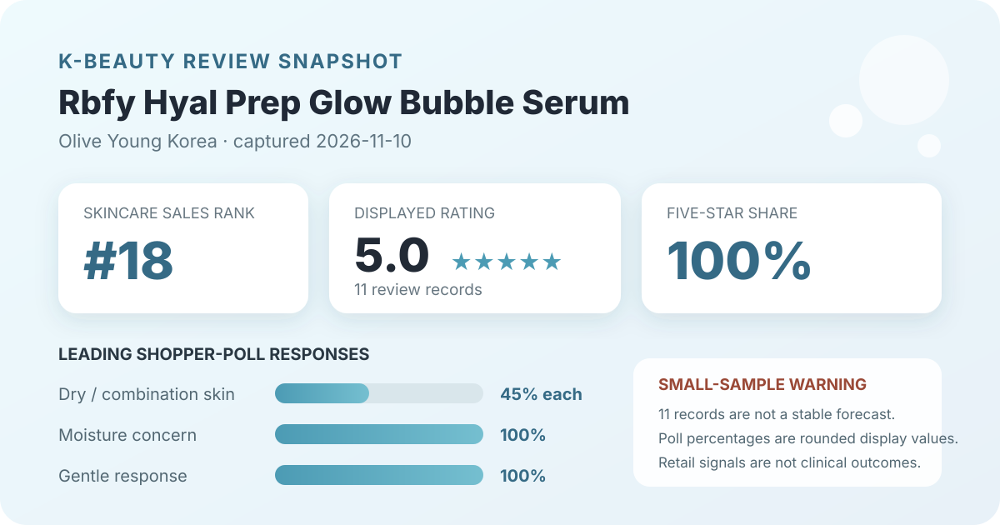
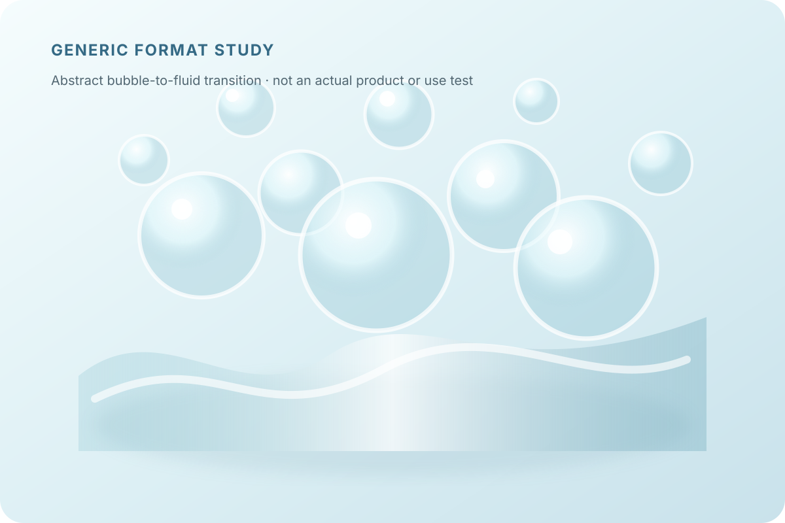

Data captured November 10, 2026. Olive Young Korea displayed the Korean title “리바이포유 히알프렙 수분광버블세럼 95ml”; this article uses “Rbfy Hyal Prep Glow Bubble Serum” as a readable English label. The analysis uses only the retailer's displayed title, ranking position, aggregate rating, star distribution, and shopper polls. It does not copy or translate individual review text, reviewer names, or photos, and it makes no claim of firsthand use.

The short version: Rbfy Hyal Prep Glow Bubble Serum appeared at number 18 in the captured skincare sales ranking. Its product header and official review view agreed on 5.0 out of 5 from 11 records. The detailed distribution placed 100% in the five-star row. Dry and combination skin were tied at 45%, while the visible concern and irritation panels each showed a 100% leading response for moisture and gentle. This is an extremely small early sample, not proof of hydration, glow, better absorption, clinical efficacy, or universal tolerance.
The displayed average was 5.0 stars. Olive Young showed 11 review records beside the product header, and the official review section repeated 5.0 and the same 11-record total. That agreement is necessary before combining the headline with the detailed percentages, but it does not solve the basic limitation: eleven observations provide only a fragile launch-stage snapshot.
The detailed view displayed these whole-number star shares:
The careful reading is simply that the captured rating pool was unanimously favorable at the precision the interface displayed. It does not establish that every purchaser had the same experience, that the current formula will suit another routine, or that the rating will remain perfect. The source does not disclose how many purchasers did not review, how records are moderated, whether incentives influenced timing, or how linked options are combined.
Small samples are especially sensitive to the next few observations. One lower score would represent a meaningful fraction of a pool this size. Treat the 5.0 and 100% five-star row as dated storefront facts, not as a forecast or a basis for ranking the serum above mature listings with thousands of records.
The skin-type panel displayed 45% dry, 45% combination, and 9% oily. The rows total 99% because the storefront presents rounded whole numbers. Dry and combination respondents were equally represented, while oily respondents made up a much smaller visible share.
This is not evidence that the serum works equally well for dry and combination skin or poorly for oily skin. The panel denominator was not shown, participation may be optional, and a response can reflect self-identification rather than a standardized skin assessment. Climate, cleanser, toner, moisturizer, sunscreen, makeup, application amount, and concurrent treatments are also unknown.
The concern panel showed 100% moisture, 0% soothing, and 0% wrinkle or brightening. With only 11 linked review records and an undisclosed poll denominator, that concentration should be read as an early category signal. It aligns with the product's moisture-forward naming, but alignment is not measurement.
No corneometer reading, transepidermal-water-loss result, comparator, standardized amount, controlled environment, or defined time frame was captured. The panel cannot show how much hydration changed, how long any effect lasted, or whether another serum would perform differently. Zero-percent rows also do not prove the product lacks soothing, wrinkle, or brightening effects; they only report what this small visible poll showed.
The irritation panel displayed 100% gentle, 0% ordinary, and 0% felt irritation. That is favorable early feedback, but it is not a safety guarantee. A retail poll does not screen for allergy history, active dermatitis, a compromised barrier, medication use, interaction with another product, or delayed reactions.
The source did not provide a patch-test protocol, clinical examiner, severity scale, exposure duration, or denominator for the panel. Anyone with known sensitivities should check the current regional ingredient list and follow appropriate professional advice rather than rely on an aggregate label.

The retailer categorizes the item as a serum and uses bubble language in its displayed name. In general terms, that suggests a leave-on product dispensed in a foamy or aerated form before being spread. This is only format context. It does not verify bubble density, collapse time, viscosity, slip, tack, scent, finish, residue, pilling, or compatibility with sunscreen and makeup.
I did not open, dispense, spread, smell, or layer the serum. The local illustration deliberately avoids reproducing the bottle, packaging, product photographs, or a person's skin. Real sensory behavior depends on the current formula, pump, amount, temperature, humidity, preceding layers, and later routine steps.
“Hyal Prep” and “glow” are readable translations of the listing's naming and positioning, not verified outcomes. The captured aggregates do not independently identify an active ingredient form, disclose a concentration, establish delivery into skin, or isolate which formula component influenced a rating.
A perfect early rating, 100% moisture response, and 100% gentle response cannot demonstrate barrier repair, deep hydration, increased skin volume, faster absorption, improved makeup adherence, or clinically meaningful radiance. Those conclusions would require defined methods, adequate samples, comparison conditions, measurements, and a stated time frame.
Rank 18 describes one moment in Olive Young Korea's skincare sales list. It is not a product-quality score. New-product placement, promotions, discounts, gifts, stock, advertising, seasonality, and short-term demand can all influence rank.
The captured listing showed a 95 ml serum, a ₩28,500 reference price, and a ₩19,900 displayed promotional price. It also showed reservation-shipping and gift language that can expire or sell out. Confirm the selected option, volume, stock, gift terms, formula, seller, return conditions, and checkout total on the live page rather than treating this snapshot as a current offer.
Rbfy Hyal Prep Glow Bubble Serum was the first distinct unpublished product after 17 higher-ranked products or promotional configurations matched existing coverage. The listing passed the consistency check: its ranking and detail titles agreed, and the product header and official review view both showed 5.0 stars from 11 records.
The displayed aggregate is uniformly favorable, but the sample is exceptionally small. The responsible conclusion is that early retailer feedback was positive and moisture-oriented at capture time. It does not prove hydration, glow, plumping, barrier repair, gentle suitability, makeup performance, clinical efficacy, or superiority over another serum. The main fact to carry forward is not the perfect score alone; it is the perfect score paired with an 11-record denominator.
Both captured review surfaces showed 5.0 out of 5 from 11 records, and the detailed display placed 100% in the five-star row.
It is reliable as a dated display fact, but not as a stable forecast. Eleven records are a very small base, so later ratings can move the average and distribution materially.
Dry and combination were tied at 45% in the displayed skin-type poll. That describes response representation, not proven suitability or performance.
No. It is a shopper-poll response, not a controlled or instrument-measured hydration result.
No. The analysis uses only retailer-displayed aggregates and does not claim firsthand use.
Source: Olive Young Korea product listing for Rbfy Hyal Prep Glow Bubble Serum 95 ml, captured November 10, 2026. Rank, price, availability, gifts, counts, percentages, and linked configurations can change after capture.
Published by The K-Beauty Data Desk. This is an editorial analysis of retailer-displayed aggregates, not medical advice or a substitute for the current product label.
← All reviews · Review-volume rankings · Skin-poll explorer · Methodology